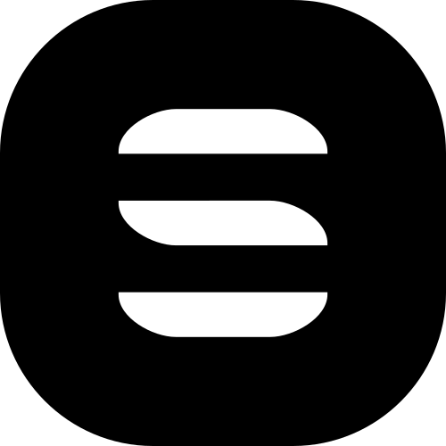

Ionic Framework
The Road to 4.0
Mike Hartington | @mhartington
The web's caught up
Ionic 4, built as Web Components
But web components are very low level

But what else?
Native App are still big!

The big plan

Options for everyone!
Questions?
</html>